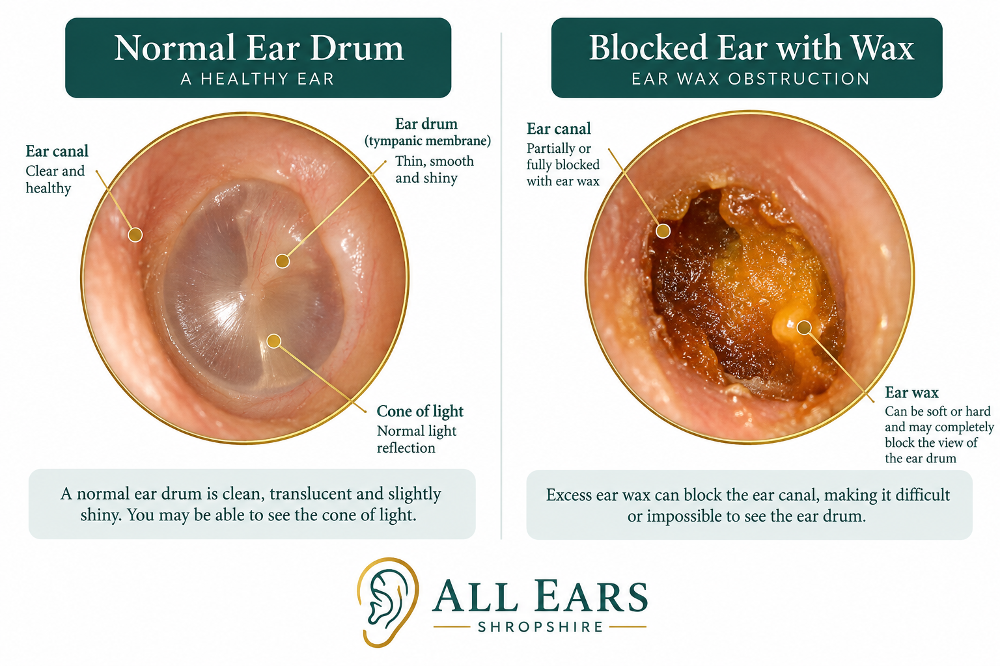
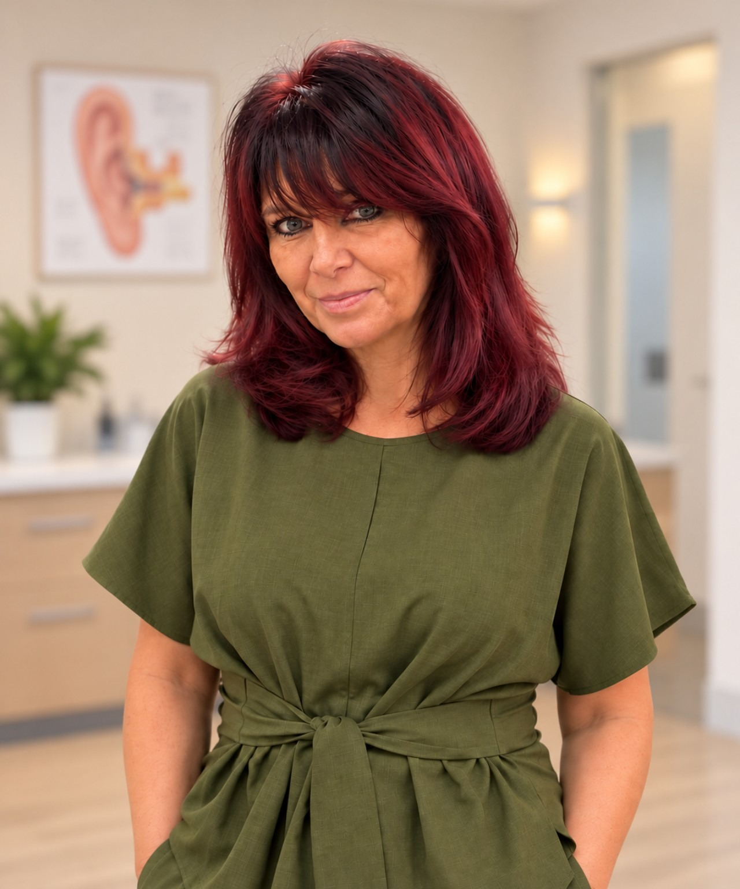

Microsuction
A controlled method of removing ear wax using gentle suction under direct visual guidance, where clinically appropriate.
Learn more about microsuction →Professional, caring ear wax removal in Shropshire, with convenient home visits in Shrewsbury and surrounding areas.
Your ears are unique. The most suitable approach will be discussed following an ear-health assessment.
A controlled method of removing ear wax using gentle suction under direct visual guidance, where clinically appropriate.
Learn more about microsuction →Carefully controlled water irrigation may be suitable for some patients following screening and assessment.
Learn more about ear irrigation →Specialist instruments can be used to remove accessible wax where this is considered appropriate and safe.
Your ears will be assessed before treatment. Microsuction, irrigation and manual removal are offered only when clinically appropriate. Some ear conditions or medical histories may mean treatment needs to be postponed or a different assessment is recommended.
An illustration comparing a healthy eardrum with an ear canal obstructed by wax.

Educational illustration only. An ear examination is needed to assess individual ear health.
Gentle, personalised ear care in the comfort of your own home.
Microsuction or irrigation, chosen to suit your ears.
Appointments usually take about 45 minutes.
Children aged 5 and over, through to older adults.
Clear advice on ear care and next steps if needed.
Everyone's ears are different. Your appointment is tailored to you, and you will not feel rushed. Most people find it comfortable.
Professional ear care at home. Our standard prices include travel within 10 miles driving distance of SY3 6AG.
Book ear-wax removal for two people at the same address during the same home visit and enjoy 10% off both treatments.
Offer applies to ear-wax removal treatments only. Excludes ear health checks and additional travel charges. Not valid with other offers.If an ear assessment finds no wax requiring removal, a reduced £30 assessment fee applies. A standalone Ear Health Check is £35. Any applicable fee is explained before treatment.

Hello, I'm Amanda, the friendly face behind All Ears Shropshire.
Having previously worked as a Community Staff Nurse, I understand the importance of compassionate, individualised care and helping people feel comfortable and reassured.
I'm trained and certified in ear-wax removal, DBS checked and insured, giving you added peace of mind when welcoming me into your home.
I established All Ears Shropshire to offer friendly, convenient and personalised ear care in Shrewsbury and surrounding areas. I take time to listen to your concerns, explain your options and help you feel at ease throughout your appointment.
Whether you need an ear health check, microsuction or irrigation, treatment options are discussed following an assessment of your individual needs and suitability.
Clearer Hearing · Happier Days
A simple, reassuring process
Choose an appointment online or call to discuss your needs. We’ll confirm your location and appointment details.
We’ll ask about your ear health and examine your ears before discussing which treatment, if any, is suitable.
Where appropriate, wax removal is carried out in the comfort of your home. You’ll receive practical aftercare advice and guidance if further assessment is needed.
Why choose us
No clinic journey needed. We bring our ear-care service to you in Shrewsbury and surrounding Shropshire areas.
Run by a former community staff nurse, with ear wax removal training, DBS checking and insurance.
Microsuction, irrigation and manual removal are considered according to your ear health and suitability.
Visits for groups and residents
We welcome enquiries from care homes, nursing homes and supported-living settings across our service area. We can discuss arrangements for individual residents or multiple appointments at the same location.
Every resident receives an individual assessment, and treatment is only provided when appropriate.
Contact us to discuss location, accessibility, resident needs and appointment availability.
Call 07737 993301Looking after your ears
Your hearing may improve straight away. A mild echo or slight itch can occur and often settles. Follow your personalised aftercare advice, including keeping your ears dry and avoiding swimming for 24 hours if advised.
Please get in touch if you have persistent pain, discharge, a sudden change in hearing or ongoing dizziness. Sudden hearing loss or severe symptoms need urgent medical assessment.
Read more in our frequently asked questions.
Your wellbeing matters
Before any wax removal, we ask about your ear health and examine your ears to help decide whether treatment is suitable. We explain the options and ask for your consent before proceeding.
We'll explain any findings and aftercare advice clearly, and you can ask questions at any stage. Wax removal can sometimes cause temporary discomfort or dizziness and, rarely, irritation, bleeding, infection or injury. We will discuss relevant risks before treatment.
Before your visit
Care you can count on
Helpful answers
Most people find ear wax removal comfortable. Amanda takes her time and explains each step.
You will still get an explanation of the findings and advice on next steps. A reduced assessment fee of £30 applies.
Yes. We care for children aged 5 and over, as well as adults and hearing aid users.
That depends on your ear health and assessment. We offer microsuction, irrigation and manual removal where clinically appropriate.
Yes. All Ears Shropshire is a mobile ear-care service. Travel within 10 miles of SY3 is included; visits farther away may incur a £10 travel charge, subject to availability.
Microsuction and irrigation are £40 for one ear or £70 for both ears. An ear health check is £35. Please enquire about manual removal pricing.
We will explain what we find, avoid unsuitable treatment and advise you to seek an appropriate healthcare assessment if needed.
Yes. Our Better Hearing Together offer gives 10% off wax removal for two people at the same address during the same visit; ear health checks and travel charges are excluded.
Choose a convenient appointment through our secure ManagePatients booking system. You'll be asked to complete the necessary screening and consent information before treatment.
Book Online Now ↗Appointments cancelled with less than 48 hours’ notice, or missed appointments, may be subject to a cancellation fee.
Mobile ear care at your door
All Ears Shropshire provides friendly, professional mobile ear wax removal and ear health checks in Shrewsbury and surrounding areas of Shropshire.
We visit patients in Shrewsbury, Baschurch, Bomere Heath, Condover, Minsterley, Pontesbury and Church Stretton, as well as nearby villages, subject to appointment availability.
Travel charges: Visits within 10 miles of SY3 are included in the treatment price. For addresses outside this area, an additional £10 travel charge may apply, subject to availability. We’ll confirm any extra charge before your appointment.
From Baschurch and Bomere Heath to Condover, Pontesbury and other villages.
Explore village coverage →Battlefield, Albrighton, Hadnall, Bomere Heath, Leaton, Fitz, Astley, Bings Heath, Shawbury, Moreton Corbet, High Ercall
Upton Magna, Withington, Rodington, Walcot, Wroxeter, Atcham, Cross Houses, Berrington, Condover, Pitchford, Acton Burnell
Bayston Hill, Dorrington, Stapleton
Hook-a-Gate, Annscroft, Exfords Green, Longden, Pontesbury
Hanwood, Cruckton, Ford, Westbury, Yockleton, Bicton, Montford Bridge, Montford, Shrawardine, Baschurch
We also welcome enquiries from Minsterley, Church Stretton and nearby villages. All visits are subject to availability.
Not sure whether we cover your address? Call 07737 993301 or email us and we’ll be happy to help.
Questions about treatment, availability or a home visit? Please call or email.
Telephone
07737 993301
Email
allearsshropshire@gmail.com
Website
www.allearsshropshire.co.uk
Follow All Ears Shropshire
Patient feedback
Your experience matters. Read about our approach to patient feedback and find out how to share yours.
Visit Our Reviews Page